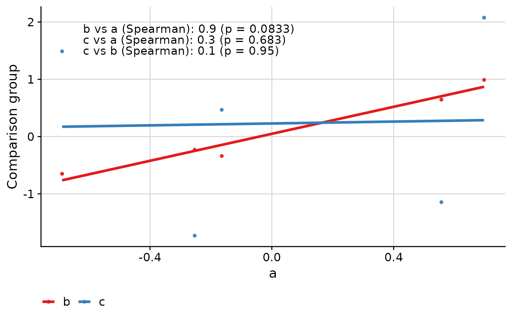

Plots a scatterplot with various correlation coefficients and an optional ab-line overlaid.
Usage
ggcorr(
data,
corr_method = "spearman",
corr_lab = "auto",
grp,
grp_base = NULL,
grp_x = NULL,
grp_lab = "auto",
y,
id,
est_signif = 3,
ci = TRUE,
pval = TRUE,
ci_signif = 3,
pval_signif = 3,
pval_trunc = 0.001,
label_id = FALSE,
label_id_size = 3,
trans = "identity",
coord = c(0.05, 0.95),
skip = 0.05,
font_size = 4.2,
hjust = 0,
vjust = 0.5,
point_size = 1,
point_alpha = 0.9,
limits_expand = NULL,
limits_equal = FALSE,
legend_title = FALSE,
legend_position = "bottom",
thm = cowplot::theme_cowplot() + theme(plot.background = element_rect(fill = "white")),
grid = cowplot::background_grid(major = "xy"),
grp_to_col = NULL,
abline = FALSE,
smooth = TRUE,
smooth_method = "lm",
smooth_se = FALSE
)Arguments
- data
dataframe. Dataframe containing the data to be plotted.
- corr_method
character vector. Correlation method. One or more of
c("concordance", "pearson", "spearman", "kendall"). Default is"spearman".- corr_lab
"never"``,"auto"“,"always"or a named character vector. Whether, and how, to label the correlation methods in the plot. If "always" or "never", then the correlation labels are always or never displayed, respectively. If `"auto"`, then they are displayed only if multiple correlation methods are used. If displaye dusing `"always"` or `"never"`, then default labels are used. If a named character vector, then the names are the correlation methods and the values are the labels, e.g. `c("spearman" = "Spearman", "kendall" = "Kendall")`. Default is `"auto"`. correlation methods are used.- grp
character. Name of the column in
datathat specifies the variables to compare between. The first level withingrp(i.e.data[[grp]][1]) is the level plotted on the x-axis, unlessgrp_xis set (see below).- grp_base
character. If not
NULL, then only correlations between this level withindata[[grp]]and other levels are displayed. IfNULL, all two-way correlations are displayed. Default isNULL.- grp_x
character. If
NULL, then this level ofgrpis plotted along the x-axis. Default isNULL.- grp_lab
"always","auto"or"never". Whether to label the groups being compared for a specific displayed correlation coefficients. If"always"or"never", then the groups are always or never labelled, respectively. If"auto", then the groups are labelled only if multiple groups are compared. Default is"auto".- y
character. Name of the column in
datathat specifies the values being correlated between groups.- id
character. Name of the column in
datathat specifies the subject from which multiple measurements were taken.- est_signif
numeric. Significant digits for correlation estimates. Default is
3.- ci
logical. Whether to include confidence intervals for correlation estimates. Default is
TRUE.- pval
logical. Whether to include p-values for correlation estimates. Default is
TRUE.- ci_signif
numeric. Significant digits for confidence intervals. Default is
3.- pval_signif
numeric. Significant digits for p-values. Default is
3.- pval_trunc
numeric. P-values smaller than this threshold will be displayed as "< threshold". Default is
0.001.- label_id
logical. If
TRUE, points labels as given bydata[[id]]are displayed usingggrepel::geom_text_repel. Default isFALSE.- label_id_size
numeric. Size of labels. Default is
3.- trans
character or trans object. Specifies scaling of y- and x-axes. If class is character, it is converted to a trans object. Adds "root_cube", "root_fourth", "root_fifth" and "asinh" transformations, as well as "sqrt" transformation that allows plotting of lines at zero. If class is a trans object, it is returned as is. Default is
"identity".- coord
numeric vector. Coordinates for text placement for first (or only) row of results. Specified in terms of proportion of axis length, with the first value specifying the x-axis coordinate and the second value the y-axis coordinate. Default is
c(0.05, 0.95), which places the first row in the top left corner of the plot.- skip
numeric. Proportion of y-axis to move down between lines of text. Default is
0.05.- font_size
numeric. Font size for text in results table. Default is
10.- hjust
numeric. Horizontal justification for text. Default is
0.- vjust
numeric. Vertical justification for text. Default is
0.5.- point_size
numeric. Size of points. Default is
1.- point_alpha
numeric. Alpha value for points. Default is
0.9.- limits_expand
list. Expand the axis limits. Default is
NULL.- limits_equal
logical. Set axis limits equal. Default is
FALSE.- legend_title
logical. If
FALSE, then the legend title is removed. Default isFALSE.- legend_position
character. Position of the legend. Default is
"bottom". IfNULL, then the legend's positioning is not jadjusted.- thm
ggplot2 theme. Specifies
ggplot2theme. Default iscowplot::theme_cowplot(), with a white plot background (as opposed to transparent).- grid
The value from calling
cowplot::background_grid. Specifies display of grid lines. IfNULL, then no background grid is displayed (recommended for non-cowplot-themed plots). Default iscowplot::background_grid(major = "xy"), which displays major grid lines on both x- and y-axes.- grp_to_col
character vector. Specifies colours for elements in
grp. Elements are colours. If named, the names specify the level withingrpto which the colours are matched. IfNULLand only two groups are compared, then all points are black. IfNULLand there are more than two groups compared, then defaults to paletteSet1of the RColorBrewer package. Default isNULL.- abline
logical. If
TRUE, then the y=x line is plotted in colour "gray85". Default isTRUE.- smooth
logical. If
TRUE, then a linear regression line is plotted.- smooth_method
character. Smoothing method to pass to
geom_smooth. Default is"lm".- smooth_se
logical. Whether to display 95% confidence interval for the smooth line. Default is
FALSE.
Examples
response_vec_a <- rnorm(5)
response_tbl <- data.frame(
group = rep(letters[1:3], each = 5),
response = c(
response_vec_a,
response_vec_a * 1.2 + rnorm(5, sd = 0.2),
response_vec_a * 2 + rnorm(5, sd = 2)
),
pid = rep(paste0("id_", 1:5), 3)
)
library(UtilsGGSV)
ggcorr(
data = response_tbl,
grp = "group",
y = "response",
id = "pid"
)
